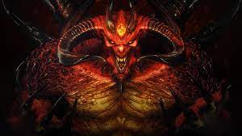

Diablo 4's Long Awaited Arrival
Diablo 3 was released in May, 2012 and Diablo 4 came out in June, 2023. It took 11 years for another game to be released
making fans extremely excited for the announcement of a new title. Everyone hoped that the reason they took so long is that
the game would be good and the wait would be worth it. We we're wrong, so many problems surrounded the game that completely
killed any faith that blizzard fans had in the company.
Firstly, the art and visual design of the game was completely different than what we've been used to in the past, which is
fine in moderation but it diverged far too much from the diablo we knew and love.
The basic gameplay of Diablo 4 was completely different compared to earlier entries in the franchise, some people welcomed
these changes but the majority weren't happy with the deviation.
Another problem that Diablo 4 had was that this time around, Blizzard had a lot of competition when it comes to the genre they
once hailed as kings in. Path of exile and other titles were simply more desirable to play, and even free in most cases
versus the hefty 60$ price tag Diablo 4 hails.
Another problem that Diablo 4 has is the lack of additions and attempts to fix the problems that it has. The game has been
out 9 months now and yet the developers have yet to added crucial things that add to the ARPG ecosystem like a leaderboard.
The game was quite obviously just a money grab for corporate greed and will suffer from the same shortcomings that Diablo 3
dealt with. The season's they've added since release have added nothing interesting to the game just like they did with
Diablo 3. they eventually added one singular DLC to Diablo 3 but it wasn't nearly enough to retain a strong enough fanbase
to revive the once beloved franchise.
It's important to note that opinions about Diablo 4 vary widely, and not everyone shares the same concerns or criticisms.
Many players are eagerly anticipating the game and are hopeful that it will live up to their expectations as a worthy successor
to the Diablo franchise. Ultimately, the success of Diablo 4 will depend on its ability to deliver a compelling and enjoyable
gaming experience that resonates with its audience.
Diablo 4 still holds a strong playercount since it's launch despite all the problems the game has and the communities hatred for it. The number of people still playing is still considered a complete success within the video game economy and i'm sure it will last for a long time. However the majority of the problem lies within the disgraceful actions on Blizzards part for their constant damage to their fanbases loyalty.
